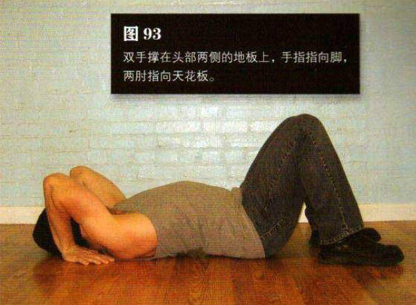
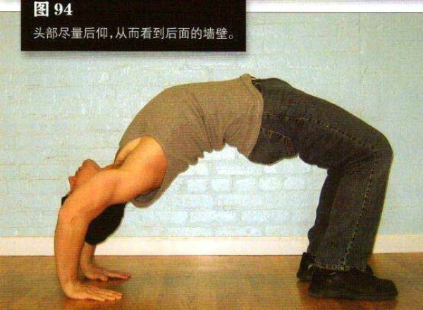

平躺在地上，弯曲膝盖，让双脚向臀部靠近，直至与其相距约 15 一 20 厘米。双脚与肩同宽或略窄，双手撑在头部两侧的地板上，手指指向脚，两肘指向天花板
尽量把髋部向上抬，从而使身体离开地板。手臂和双腿继续用力推，直到背部形成优美的弧形。在完美的桥中，手臂要完全伸直。头部尽量后仰，从而看到后面的墙壁。这是该动作的结束姿势（图 94）。在最高处暂停一会儿，然后反向运动，有控制地放低身体——要平缓地降低，不要一下塌下来，这样你会受益更多。继续放低身体，直到髋部、背部和头部完全接触地面。这一连串动作就是一个标准的桥。完成相应的训练目标，整个过程尽量保持正常呼吸。
初级标准：1 组，6 次
中级标准：2 组，各 10 次
高级标准：2 组，各 15 次